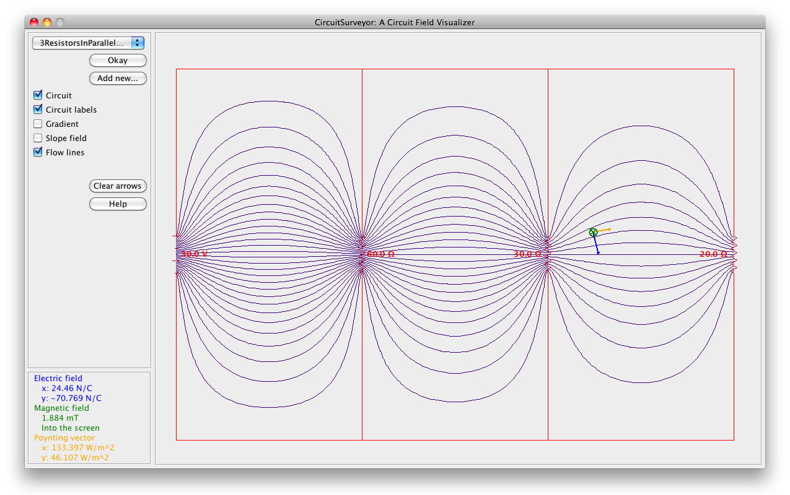

CircuitSurveyor is released to the public under the terms of the GNU General public
license, version 3. There is no warranty. For the full terms, see
here.
CircuitSurveyor is released to the public under the terms of the GNU General public
license, version 3. There is no warranty. For the full terms, see
here.
CircuitSurveyor was created in 2010–11 by Noah Morris, a student of Oberlin College, under the advisement of Oberlin College Professor of Physics Dan Styer.
| Click icon to launch CircuitSurveyor: |
Instructions for using CircuitSurveyor (also reachable from within CircuitSurveyor by clicking the Help button).
Instructions for designing your own custom circuits for use within CircuitSurveyor.
Show instructions to download the source code of CircuitSurveyor as a .zip file.
Screenshot:

CircuitSurveyor is released to the public under the terms of the GNU General public
license, version 3. There is no warranty. For the full terms, see
here.